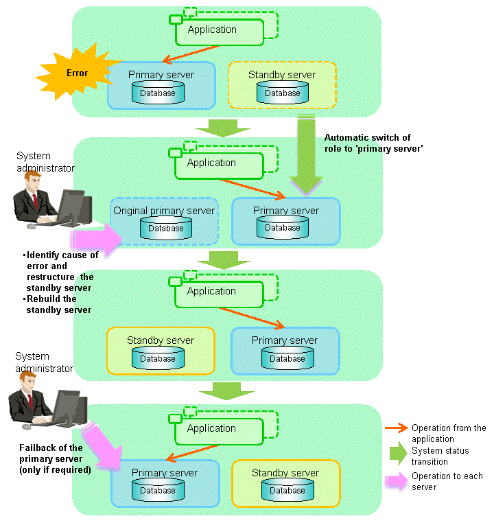

This section explains the operations when the server has started degrading after a switch has occurred.
Note
After a switch has occurred as a result of an abnormality on the primary server, the database will not have a multiplexed configuration until the standby server is rebuilt. Remove the cause of the error as quickly as possible, and then rebuild the standby server.
If the reference job was executed on the standby server, and the servers are switched because an error occurred on the primary server, the load is concentrated on the new primary server. Accordingly, pause the reference job on the original standby server, rebuild the original primary server as the new standby server, and then resume the reference job for the new standby server.
If the instance on the new primary server is stopped before the original primary server where the error occurred is rebuilt as the new standby server, a split brain occurs at startup from the instance on the original primary server. Therefore, start the instance on the new primary server before rebuilding the standby server.
If the switch occurred and the server has started degrading, perform the following operations to recover the standby server and revert it to its original state:
Failback of the Primary Server (only if required)
The flow of these operations is shown in the figure below.
Figure 4.1 Flow of operations

Perform the recovery according to the following procedure:
Execute the mc_ctl command in stop mode for the original primary server on which the error occurred.
If automatic start and stop of Mirroring Controller has been configured using systemd, do not use the mc_ctl command, but instead use the systemctl command. Refer to "2.12 Setting Automatic Start and Stop of Mirroring Controller and Multiplexed Instances" for details.
Example)
$ mc_ctl stop -M /mcdir/inst1
This also stops the instance that is required to perform the recovery.
Note
If the instance does not stop, refer to "Actions in Response to Failure to Stop an Instance" in the Operation Guide, and then stop the instance.
Then, specify the -e option in the above command to forcibly stop Mirroring Controller.
Copy the files in the Mirroring Controller management directory from the backup data, and then perform the recovery.
Refer to the system log of the primary server and the standby server to identify the cause of the error, and then perform recovery.
The following commands can be used to recover a standby server. Select depending on the recovery and the situation.
pg_basebackup
Creates a copy of all resources of the primary server instance.
pg_rewind
Creates a copy of only the updated files on the new primary server. For this reason, if this command is used to incorporate a new standby server, recovery time can be shortened. To use this command to build the original primary server as a new standby server, at least one of the following must be met:
Checksums were enabled when an instance was created, or
The wal_log_hints parameter of postgresql.conf was enabled when an instance was started.
Additionally, full_page_writes must be enabled, which is its default value.
See
Refer to "pg_basebackup" in "Reference" in the PostgreSQL Documentation for information on the pg_basebackup command.
Refer to "pg_rewind" in "Reference" in the PostgreSQL Documentation for information on the pg_rewind command.
The example below executes the pg_rewind command to perform recovery by synchronizing data on the original primary server with the new primary server.
Wait for the application of unapplied update transaction logs on the new primary server.
Execute the SQL below on the new primary server, and wait until the result is false.
# select pg_is_in_recovery();
Example)
$ psql -h hostNameOfNewPrimaryServer -p portNumOfNewPrimaryServer -d dbName -c "select pg_is_in_recovery();"
Any database can be connected to.
Note
If the pg_rewind command is executed immediately after promotion of the new primary server, the processing in steps 1 and 2 is required. If update-type SQL can be executed on the new primary server and checkpoint processing is executed after promotion, the processing in steps 1 and 2 will not be necessary.
Update the timeline ID.
Execute checkpoint processing, and update the timeline ID.
$ psql -h hostNameOfNewPrimaryServer -p portNumOfNewPrimaryServer -d dbName -c "checkpoint;"
Any database can be connected to.
Create a copy of the new primary server instance in the original primary server (new standby server).
Execute the pg_rewind command to synchronize the new standby server data with the new primary server.
Example)
$ pg_rewind -D /database/inst1 -R --source-server='user=userName host=newPrimaryServerHostName port=newPrimaryServerPortNumber dbname=dbName application_name=newStandbyServerName'
Note
Use the pg_rewind command with the -R option to create a standby.signal file. If you do not create the standby.signal file, the Mirroring Controller cannot be started as a standby server.
If using a method that requires password authentication for connections to the primary server, you will need to ensure that authentication is performed automatically. If the -R option is specified for the pg_rewind command and the password parameter is specified for the --dbname option, the pg_rewind command will set the password in the primary_conninfo parameter in postgresql.auto.conf file, enabling connections to be performed automatically.
If a password is not set in the primary_conninfo parameter in postgresql.auto.conf file, it will be necessary to create a .pgpass file in the home directory of the instance administrator user, and specify a password for the replication database.
If you need to set a connection string other than host, port and application_name, include it in the setting of the primary_conninfo parameter.
The primary_conninfo parameter should not be set in the postgresql.conf file, but only in the postgresql.auto.conf file using the pg_rewind command.
Specify parameters in the postgresql.conf file of the original primary server (new standby server).
Set the parameters required for the standby server in postgresql.conf.
Refer to "Table 2.5 Parameters" for information on the parameters to set in postgresql.conf.
See
Refer to "Hot Standby" in the PostgreSQL Documentation for details on the standby.signal file.
Refer to "Setting Up a Standby Server" in the PostgreSQL Documentation for details on the primary_conninfo.
Note
A new timeline is branched for the new primary server due to promotion, so 'latest' needs to be specified for the recovery_target_timeline parameter so that the old primary server (new standby server) follows the new primary server.
The starting of the recovered original primary server as the standby server is referred to as the "standby server rebuild".
On the original primary server, start Mirroring Controller and the instance.
As the instance administrator user, execute the mc_ctl command in start mode.
Example)
$ mc_ctl start -M /mcdir/inst1
As the instance administrator user, execute the mc_ctl command in start mode with the -F option specified.
Example)
$ mc_ctl start -M /mcdir/inst1 -F
Point
After Mirroring Controller is started, automatic switch/disconnection can be enabled or disabled using the enable-failover or disable-failover mode of the mc_ctl command.
To revert the primary server and standby server to the original server configuration after rebuilding the standby server, perform failback for the primary server.
Do this to execute the main job on the previous primary server.
Perform the following procedure:
Failback of the primary server
Execute the mc_ctl command in switch mode on the primary server or the standby server.
Example)
$ mc_ctl switch -M /mcdir/inst1
After executing the mc_ctl command in switch mode, the status will be as follows:
Example)
$ mc_ctl status -M /mcdir/inst1mirroring status----------------switchedserver_id host_role host host_status db_proc_status disk_status----------------------------------------------------------------------------------------------server1 primary 192.0.2.100 normal abnormal(postmaster) normalserver2 none(inactivated primary) 192.0.2.110 normal abnormal(postmaster) normal
Stop the original primary server
On the original primary server, execute the mc_ctl command in stop mode to stop Mirroring Controller and the instance.
If automatic start and stop of Mirroring Controller has been configured using systemd, do not use the mc_ctl command, but instead use the systemctl command. Refer to "2.12 Setting Automatic Start and Stop of Mirroring Controller and Multiplexed Instances" for details.
Example)
$ mc_ctl stop -M /mcdir/inst1
Create a copy of the new primary server instance in the original primary server (new standby server)
Execute the pg_basebackup command to create data in the new standby server by synchronizing with the new primary server.
Example)
$ pg_basebackup -D /database/inst1 -X fetch --waldir=/transaction/inst1 --progress --verbose -R --dbname='application_name=standbyServerName' -h primaryServerHostName -p primaryServerPortNumber
See
The procedure for copying the new primary server instance to the new standby server is the same as the procedure for setting up the new standby server.
Refer to "2.5.2 Creating, Setting, and Registering the Standby Server Instance", and then perform the recovery.
Rebuild the standby server
On the standby server, start Mirroring Controller and the instance.
As the instance administrator user, execute the mc_ctl command in start mode.
Example)
$ mc_ctl start -M /mcdir/inst1
As the instance administrator user, execute the mc_ctl command in start mode with the -F option specified.
Example)
$ mc_ctl start -M /mcdir/inst1 -F
Point
After Mirroring Controller is started, automatic switch/disconnection can be enabled or disabled using the enable-failover or disable-failover mode of the mc_ctl command.